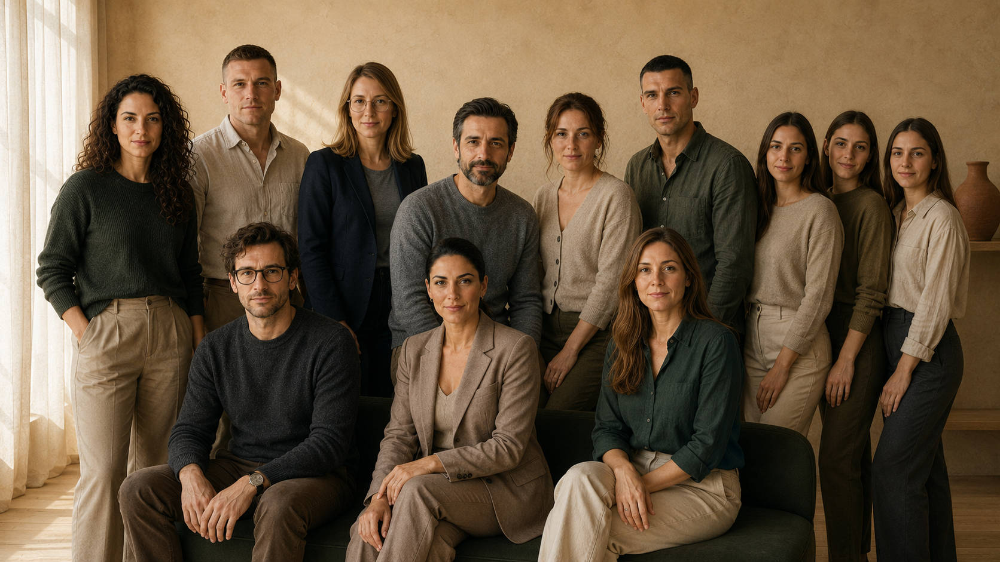

Meridian je mesto gde se tvoje brojke ne čitaju na brzinu i ne završe u PDF-u koji ne razumeš. Iza svakog nalaza sedi tim koji ti kaže šta znači i šta ćeš dalje s tim.
Zakaži besplatan pozivGodinama smo gledali istu scenu. Čovek izvadi krv, dobije „sve je uredno” i ode kući. Za dve godine se vrati sa dijagnozom koja se videla i tada, samo je niko nije tražio.
Standardni pregled traži bolest. Mi smo hteli mesto koje traži smer, dok još možeš da ga menjaš. Zato smo napravili Meridian.

Kad stigne simptom, promena već traje godinama. Merimo dok se još sve može promeniti, ne kad je kasno.
Automat ti pošalje PDF i ostavi te da nagađaš. Kod nas tvoj nalaz prolazi kroz lekare koji sednu s tobom i objasne šta znači.
Prosek ti kaže gde je masa ljudi. Tvoj trend kroz vreme ti kaže da li ideš na bolje. Samo to drugo ti stvarno pomaže.
Ne prodajemo čuda. Kad nešto traži specijalistu ili kad nemamo odgovor, čućeš to od nas prvo.
Tvoj slučaj ne vodi jedan čovek, vodi ga ceo tim. Svaki gleda svoj deo, a zajedno sklapaju celu sliku. Svi sa najmanje 15 godina kliničkog iskustva.
Vodi najviše naših slučajeva i spaja sve tvoje brojke u jednu sliku. Kad se markeri ne slažu, ona zna gde da traži dalje.
Prvi pregled i tumačenje nalaza. Objasni ti šta svaka brojka znači za tebe, bez žurbe i bez latinskog.
Hormoni, štitna žlezda i šećer. Kad te umor prati bez jasnog razloga, ona nađe zašto.
Srce i krvni sudovi. Gleda tvoj ApoB i pritisak decenijama pre nego što bi to postao problem.
Prevodi tvoj nalaz u ono što staviš na tanjir. Plan koji možeš da držiš i kad ti je nedelja teška.
Kretanje i sastav tela. Koliko mišića da čuvaš, koliko masti da skineš i kako, da te trening gradi umesto da te lomi.
Drugi par očiju na svakom složenijem nalazu. Voli da poveže naizgled nepovezane brojke u jedno objašnjenje.
Štitna žlezda i metabolizam kroz sve faze života. Zna kad brojka nije loša, nego samo nije tvoja.
Prevencija pre svega. Radije uhvati rizik na papiru nego da čeka da se javi u grudima.
članova koji svoje zdravlje danas prate po brojkama, ne po osećaju.
urađenih merenja iz kojih učimo šta zaista pomera brojke, a šta ne.
godina kliničkog iskustva iza svakog člana tima koji čita tvoje nalaze.
Zakaži besplatan poziv od 30 minuta. Kažeš šta te muči, mi ti kažemo odakle da krenemo. Bez naplate i bez pritiska. Ako procenimo da ti ne trebamo, prvi ćemo ti reći.
Zakaži besplatan pozivPrvi poziv te ne obavezuje ni na šta. Program biraš tek kad vidiš da ti odgovara.